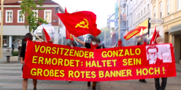

貢薩羅主席在斯圖加特和法蘭克福的行動
2021-09-12T19:22:39+00:00
[‘https://www.demvolkedienen.org/images/Vorsitzender_Gonzalo/stuttgart.jpg’, ‘https://www.demvolkedienen.org/images/Vorsitzender_Gonzalo/Frankfurt1.jpg’, ‘https://www.demvolkedienen.org/images/Vorsitzender_Gonzalo/Frankfurt2.jpg’, ‘https://www.demvolkedienen.org/images/Vorsitzender_Gonzalo/frankfurt3.jpg’]
分類::
一般的 (Allgemein)
昨天，在斯圖加特舉行的一年一度的支持政治犯的ADHK活動再次舉行。當天在伊斯坦布爾舉行了一場關於這一主題的示威遊行，在土耳其部分現場直播的各種演講中，有關於拘留條件悲慘、監獄人滿為患以及對民主運動和群眾鬥爭的鎮壓的報道。此外，還有一個廣泛的文化方案，由不同的音樂家提供捐助。
活動的主要焦點也是捍衛貢薩羅主席生命的運動，同志們在開幕詞中已經談到了這一點，但在活動的其他地方也談到了這一點。此外，還豎起了一面橫幅，上面寫著貢薩羅主席和捍衛其生命和所有政治犯自由的口號，告知他們今後將在這裡採取進一步行動。
最後，涉及80多名同志的事件報道，貢薩羅主席在同一天上午被祕魯人殺害。緊接著，一場聲勢浩大的團結表演開始了：ADHK和階級立場的同志們發表了自發的演講，動員了進一步的行動（包括週六在漢伯g），在各種音樂家Bella Ciao的合作下舉行了一分鐘的默哀和協調。
在法蘭克福，同一天中午在祕魯領事館前舉行了一次集會，游擊隊的同志們向該領事館打過電話，該領事館也加入了其他各種毛主義勢力。大約30名同志大聲呼喊，並呼籲為捍衛貢薩羅主席的生命而戰鬥口號國際聲援和聲援世界大戰的口號。
https://www.demvolkedienen.org/index.php/de/36-nachrichten/allgemeines/5770-aktionen-in-stuttgart-und-frankfurt-zu-vorsitzendem-gonzalo
奧地利-關於暗殺貢薩羅主席的宣言

2021-09-12T20:00:23.603Z
10 Min. Lesezeit
[‘https://static.wixstatic.com/media/3b583c_71a0e342c08743728bfd12c64569efa5~mv2.png/v1/fit/w_300,h_300,al_c,q_5/file.png’, ‘https://static.wixstatic.com/media/3b583c_ab098b973a4e4d8e89a99eca44671726~mv2.png/v1/fill/w_98,h_77,al_c,usm_0.66_1.00_0.01,blur_3/3b583c_ab098b973a4e4d8e89a99eca44671726~mv2.png’]
在貢薩羅主席遇刺之際，11日上午。9月，通過帝國主義者和祕魯人的反應，我們收到了以下信息，我們打算在這裡加以記錄。編輯
各國無產階級，團結起來！
ZFK關於暗殺貢薩羅主席的聲明，2012年11月。2021年9月
國際無產階級懷著無情的階級仇恨，通過組建一些新的共產主義者，通過廢除人民戰爭偉大路線中的舊秩序，正在處理暗殺貢薩羅主席的不分青紅皁白的法西斯暴行！
“反政府組織知道它為什麼要帶走我們的領導人：培養領導人並不容易。而我們正在進行的人民戰爭需要一個領導這場運動、代表這場運動並以令人不快的方式領導這場運動的領導人。”
“每個人都會死，但是一個人的死比泰山更重要，另一個人的死比天鵝火焰更重要。如果一個人為了人民的利益而死，那麼死亡比泰山更重要；如果一個人站在法西斯的戰爭中，為人民的剝削者和壓迫者而死，那麼我們就有了死亡"毛主席,董事會主席,
貢薩羅主席是世界上最大的馬列主義毛澤東主義者，他於2021年9月11日凌晨642點在卡勞海軍基地被謀殺，在那裡他被監禁了29年，遭受了隔離和酷刑，但從未放棄這場偉大的英勇鬥爭！國際共產主義運動絕不會讓這一罪行逍遙法外。一代又一代的共產主義者將在這一罪行面前塑造自己，他們將繼續組織和提升自己的隊伍，將貢薩羅主席的偉大紅旗置於他們的頭上。貢薩羅主席為無產階級世界革命獻出了自己的生命，他設計了重建光榮的祕魯共產黨的宏偉計劃，建立了統一的基礎，並在其領導人参與並指導革命的過程中，巧妙地、徹底地為無產階級世界革命服務，執行了這一計劃世界無產階級軍隊及其紅色大軍與其他軍隊不同。我們重申：與貢薩羅主席一起，世界上無可爭議的最偉大的馬列主義毛澤東主義者被法西斯的反作用之犬謀殺了！貢薩羅主席對唯一的科學、全能的革命作出了普遍有效的貢獻n因為無產階級的真正意識形態和通過貢薩羅思想，通過其理論和解釋，在所有本質方面豐富了馬列主義毛澤東主義。正是他系統地總結了馬列主義毛澤東主義，從而完成了左派無產階級力量在d偉大的毛主席在1976年反革命中去世後，他從中國共產黨中解放出來。
貢薩羅主席遇刺震驚了全世界的共產主義者和革命者。反應的計劃是，在這場法西斯野蠻行徑中，在美國共產主義者的隊伍中，犯下這種動物不文明、混亂、沮喪、無紀律和投降的難以想象的罪行。這正是他們希望通過敲定長期制定的黑暗計劃來實現的目標，這也是他們慶祝其卑鄙可恥行為的原因。但共產黨人（今天指的是馬列主義毛澤東主義者）則以貢薩羅主席的教導為武器，他指出了革命的樂觀主義。無產階級和我們共產黨人總是樂觀主義者，因為毛主席告訴我們，只有修正主義者和機會主義者才是悲觀主義者。無產階級和我們共產黨人總是樂觀主義者，因為毛主席未來是歷史定義的。它屬於我們，在政治上是朝著這個方向發展的。群眾不會陷入悲觀主義。他們從來沒有這樣做過。聲稱任何其他東西都是荒謬的，意味著誹謗他們。群眾鬥爭。但為了讓群眾鬥爭，他們需要領導，需要一個黨，因為他們不這樣做沒有黨的群眾運動是可以發展、保持和前進的。”
收買並服務於帝國主義壟斷者的國際資產階級報刊，慶祝被他們稱為“恐怖分子”的貢薩羅主席遇刺及其所謂的“罪行”"正是他把自己的生命完全獻給了無產階級和人民群眾,更是把無產階級和人民群眾的利益變成了自己的利益,並在思想和行動上與他們融為一體,然而,正如馬克思主義關於人格在歷史上的作用所做的那樣,，因此，貢薩羅主席是一個偉大的例子，說明了將自己的生命完全用於無產階級解放，為共產主義獻出生命的意義。反應認為，殺死貢薩羅主席，他可以獲得解脫，因為貢薩羅主席直到去世這對他們來說是一種危險，因為在他們的黑暗計劃完成之前，他們對他有著無法想象的恐懼。但是，他們的歡欣只證明了貢薩羅主席在戰鬥中真正使他們相信他站在最高的山峰上，有著一副寬闊而清晰的面孔mm和剝削、謊言、酷刑、壓迫、機會主義和欺詐的骯髒誘惑著他們作為反動派和工薪作家為資產階級服務的悲慘和無用的生存。完全為帝國主義服務的祕魯媒體說：“貢薩羅也扼殺了貢薩羅的思想“這是他們的夢想，一個反動的夢想，在它開始之前就已經失敗了，因此永遠不會實現。這個反動的夢想非常具有啟發性，因為他們含蓄地承認存在貢薩羅思想，馬克思列寧主義毛主義在祕魯現實中的具體化，他們她的反動夢想註定要失敗，因為貢薩羅的思想是真實的，正如貢薩羅主席本人所指出的，即使是最憤怒和最猖獗的資產階級也不能謀殺真相。而一方面，她超越了自己的黑人夢想，反應說另一方面，不應該給貢薩羅主席一個墳墓，否則他將成為一個“崇敬中心”。但是，如果貢薩羅認為自己是與貢薩羅主席一起死去的，而不是像該反應所宣稱的那樣植根於人民，那麼令人恐懼的悼念是從哪裡來的呢？很明顯：即使是被暗殺，貢薩羅主席也絲毫沒有失去對這個村鎮的恐懼對資產階級的恐懼也對應於對貢薩羅主席和他領導的政黨面前的國際機會主義的恐懼機會主義者，特別是那些以右翼機會主義路線的形式在祕魯具體化自己的人，正在與貢薩羅主席戰鬥，甚至戰鬥到他死後，因為他的工作並沒有讓他們休息。無論在國際上以何種形式出現的機會主義者再次發現，他們悲慘的政治存在只不過是在無產階級和人民中傳播資產階級意識形態的有害影響。
捍衛貢薩羅主席生命和健康的國際運動在包括奧地利在內的許多國家產生了強烈而活躍的行動，它表達了共產黨在國際一級為統一而進行的鬥爭。貢薩羅作為國際革命運動（RIM）左翼領袖我們明確歡迎當前運動的每一項行動，將其視為無產階級國際主義的傑出範例，視為無產階級國際主義的傑出範例，視為表示對貢薩羅主席對馬列主義、毛澤東主義普遍有效貢獻的認可正在增加，並在越來越多的國家得到體現。”總之，無產階級、被壓迫人民、忠於馬克思主義的政黨和組織的鬥爭，然而，最大的支持是馬克思列寧主義、毛澤東主義不可或缺的理論，這是國際無產階級的意識形態，是全世界工人階級在幾十年的鬥爭中形成的。這是確保取得進展的唯一途徑。”（貢薩羅主席）在這一進展中，我們的委員會在a B的領導下也是如此。
https://newepochnews.wixsite.com/newepochnews/post/austria-erklärung-zur-ermordung-des-vorsitzenden-gonzalo
奧地利-關於暗殺貢薩羅主席的宣言
2021-09-12T20:07:34.067Z
10 Min. Lesezeit
[‘https://static.wixstatic.com/media/3b583c_71a0e342c08743728bfd12c64569efa5~mv2.png/v1/fit/w_300,h_300,al_c,q_5/file.png’, ‘https://static.wixstatic.com/media/3b583c_ab098b973a4e4d8e89a99eca44671726~mv2.png/v1/fill/w_98,h_77,al_c,usm_0.66_1.00_0.01,blur_3/3b583c_ab098b973a4e4d8e89a99eca44671726~mv2.png’]
在9月11日帝國主義和祕魯反應暗殺貢薩羅主席的事件發生時，我們收到了奧地利（毛主義）共產黨成立委員會中央領導委員會的一份聲明。我們正在編寫本宣言的英文譯本，並將儘快予以公佈。《新紀元》的編輯材料。
各國無產階級，團結起來！
ZFK關於暗殺貢薩羅主席的聲明，2012年11月。2021年9月
國際無產階級懷著無情的階級仇恨，通過組建一些新的共產主義者，通過廢除人民戰爭偉大路線中的舊秩序，正在處理暗殺貢薩羅主席的不分青紅皁白的法西斯暴行！
“反政府組織知道它為什麼要帶走我們的領導人：培養領導人並不容易。而我們正在進行的人民戰爭需要一個領導這場運動、代表這場運動並以令人不快的方式領導這場運動的領導人。”
“每個人都會死，但是一個人的死比泰山更重要，另一個人的死比天鵝火焰更重要。如果一個人為了人民的利益而死，那麼死亡比泰山更重要；如果一個人站在法西斯的戰爭中，為人民的剝削者和壓迫者而死，那麼我們就有了死亡"毛主席,董事會主席,
貢薩羅主席是世界上最大的馬列主義毛澤東主義者，他於2021年9月11日凌晨642點在卡勞海軍基地被謀殺，在那裡他被監禁了29年，遭受了隔離和酷刑，但從未放棄這場偉大的英勇鬥爭！國際共產主義運動絕不會讓這一罪行逍遙法外。一代又一代的共產主義者將在這一罪行面前塑造自己，他們將繼續組織和提升自己的隊伍，將貢薩羅主席的偉大紅旗置於他們的頭上。貢薩羅主席為無產階級世界革命獻出了自己的生命，他設計了重建光榮的祕魯共產黨的宏偉計劃，建立了統一的基礎，並在其領導人参與並指導革命的過程中，巧妙地、徹底地為無產階級世界革命服務，執行了這一計劃世界無產階級軍隊及其紅色大軍與其他軍隊不同。我們重申：與貢薩羅主席一起，世界上無可爭議的最偉大的馬列主義毛澤東主義者被法西斯的反作用之犬謀殺了！貢薩羅主席對唯一的科學、全能的革命作出了普遍有效的貢獻n因為無產階級的真正意識形態和通過貢薩羅思想，通過其理論和解釋，在所有本質方面豐富了馬列主義毛澤東主義。正是他系統地總結了馬列主義毛澤東主義，從而完成了左派無產階級力量在d偉大的毛主席在1976年反革命中去世後，他從中國共產黨中解放出來。
貢薩羅主席遇刺震驚了全世界的共產主義者和革命者。反應的計劃是，在這場法西斯野蠻行徑中，在美國共產主義者的隊伍中，犯下這種動物不文明、混亂、沮喪、無紀律和投降的難以想象的罪行。這正是他們希望通過敲定長期制定的黑暗計劃來實現的目標，這也是他們慶祝其卑鄙可恥行為的原因。但共產黨人（今天指的是馬列主義毛澤東主義者）則以貢薩羅主席的教導為武器，他指出了革命的樂觀主義。無產階級和我們共產黨人總是樂觀主義者，因為毛主席告訴我們，只有修正主義者和機會主義者才是悲觀主義者。無產階級和我們共產黨人總是樂觀主義者，因為毛主席未來是歷史定義的。它屬於我們，在政治上是朝著這個方向發展的。群眾不會陷入悲觀主義。他們從來沒有這樣做過。聲稱任何其他東西都是荒謬的，意味著誹謗他們。群眾鬥爭。但為了讓群眾鬥爭，他們需要領導，需要一個黨，因為他們不這樣做沒有黨的群眾運動是可以發展、保持和前進的。”
收買並服務於帝國主義壟斷者的國際資產階級報刊，慶祝被他們稱為“恐怖分子”的貢薩羅主席遇刺及其所謂的“罪行”"正是他把自己的生命完全獻給了無產階級和人民群眾,更是把無產階級和人民群眾的利益變成了自己的利益,並在思想和行動上與他們融為一體,然而,正如馬克思主義關於人格在歷史上的作用所做的那樣,，因此，貢薩羅主席是一個偉大的例子，說明了將自己的生命完全用於無產階級解放，為共產主義獻出生命的意義。反應認為，殺死貢薩羅主席，他可以獲得解脫，因為貢薩羅主席直到去世這對他們來說是一種危險，因為在他們的黑暗計劃完成之前，他們對他有著無法想象的恐懼。但是，他們的歡欣只證明了貢薩羅主席在戰鬥中真正使他們相信他站在最高的山峰上，有著一副寬闊而清晰的面孔mm和剝削、謊言、酷刑、壓迫、機會主義和欺詐的骯髒誘惑著他們作為反動派和工薪作家為資產階級服務的悲慘和無用的生存。完全為帝國主義服務的祕魯媒體說：“貢薩羅也扼殺了貢薩羅的思想“這是他們的夢想，一個反動的夢想，在它開始之前就已經失敗了，因此永遠不會實現。這個反動的夢想非常具有啟發性，因為他們含蓄地承認存在貢薩羅思想，馬克思列寧主義毛主義在祕魯現實中的具體化，他們她的反動夢想註定要失敗，因為貢薩羅的思想是真實的，正如貢薩羅主席本人所指出的，即使是最憤怒和最猖獗的資產階級也不能謀殺真相。而一方面，她超越了自己的黑人夢想，反應說另一方面，不應該給貢薩羅主席一個墳墓，否則他將成為一個“崇敬中心”。但是，如果貢薩羅認為自己是與貢薩羅主席一起死去的，而不是像該反應所宣稱的那樣植根於人民，那麼令人恐懼的悼念是從哪裡來的呢？很明顯：即使是被暗殺，貢薩羅主席也絲毫沒有失去對這個村鎮的恐懼對資產階級的恐懼也對應於對貢薩羅主席和他領導的政黨面前的國際機會主義的恐懼機會主義者，特別是那些以右翼機會主義路線的形式在祕魯具體化自己的人，正在與貢薩羅主席戰鬥，甚至戰鬥到他死後，因為他的工作並沒有讓他們休息。無論在國際上以何種形式出現的機會主義者再次發現，他們悲慘的政治存在只不過是在無產階級和人民中傳播資產階級意識形態的有害影響。
捍衛貢薩羅主席生命和健康的國際運動在包括奧地利在內的許多國家產生了強烈而活躍的行動，它表達了共產黨在國際一級為統一而進行的鬥爭。貢薩羅作為國際革命運動（RIM）左翼領袖我們明確歡迎當前運動的每一項行動，將其視為無產階級國際主義的傑出範例，視為無產階級國際主義的傑出範例，視為表示對貢薩羅主席對馬列主義、毛澤東主義普遍有效貢獻的認可正在增加，並在越來越多的國家得到體現。”總之，無產階級、被壓迫人民、忠於馬克思主義的政黨和組織的鬥爭，然而，最大的支持是馬克思列寧主義、毛澤東主義不可或缺的理論，這是國際無產階級的意識形態，是全世界工人階級在幾十年的鬥爭中形成的。引導我們，使我們能夠
https://newepochnews.wixsite.com/newepochnews/post/austria-declaration-on-the-assassination-of-chairman-gonzalo
祕魯-MPP關於暗殺貢薩羅主席的聲明
2021-09-12T20:19:05.110Z
11 Min. Lesezeit
[‘https://static.wixstatic.com/media/3b583c_71a0e342c08743728bfd12c64569efa5~mv2.png/v1/fit/w_300,h_300,al_c,q_5/file.png’, ‘https://static.wixstatic.com/media/3b583c_ab098b973a4e4d8e89a99eca44671726~mv2.png/v1/fill/w_98,h_77,al_c,usm_0.66_1.00_0.01,blur_3/3b583c_ab098b973a4e4d8e89a99eca44671726~mv2.png’]
在這裡，我們分享祕魯人民運動關於暗殺貢薩羅主席的宣言的非官方譯文。我們目前正在研究更好的翻譯，並將在完成後儘快出版。-《新紀元》的編輯材料
各國無產階級，團結起來！
貢薩羅主席挫敗了反動計劃，以徹底打擊人民戰爭
“毛澤東主席非常公正地教導我們，戰爭是有限度的，這是戰爭的基本原則，它使我們看到所有人的利益必然要求犧牲一部分。在這八年的人民戰爭中，我們慷慨地流了血；黨的領導人、黨的幹部和武裝分子、人民游擊隊戰士軍隊和與我們關係最密切的人民群眾的子女們獻出了生命和鮮血；但在這些土地上，他們從未如此英勇地、歷史性地傾注過鮮血，從未見過我們革命家和共產主義者的鮮血如何在我們中間流淌，使新的力量在我們中間結出果實，但它也慷慨地揮霍著我們必須照亮世界，因為這就是它正在做的。
許多年輕人的生命被砍掉了，但如果他們認為這只是砍掉了他們的生命，他們的反應就是夢想；是英勇的投降，意識到假定的事業，使人民的同志、戰士和兒子們達到了人們能夠給予的最大表達，來支持自己的信仰：獻出自己的生命。他們是英雄c生活得很好，有著輝煌的投資，最重要的是，被封在了傳播共產主義的戰場上。”
（貢薩羅主席在PCP第一屆大會開幕式上的講話，1988年）
向國際無產階級和世界人民：
我們高舉拳頭，高唱戰爭和勝利之歌，高舉鐮刀和錘子，在紅旗下，在貢薩羅主席的領導下，在他的全能思想的指引下，我們懷著巨大的情感和深切的悲痛，傳達著貢薩羅主席為永垂不朽的馬列主義毛澤東主義獻出了生命，據反動媒體報道，2021年9月11日，昨天下午6點，黨和人民戰爭在卡拉奧海軍基地最高的發光戰壕進行。上午40點。
根據機會主義者rondero Pedro Castillo Terrones的反動政府的公報，正式宣佈貢薩羅主席的實際清算已經完成。
領導反動政府的機會主義者朗德羅，與他的部長、議員、帝國主義和平民、軍事和宗教代表一起，在媒體的齊聲譴責下，對反動階級深惡痛絕，在完成了對貢薩羅主席進行人身殲滅的邪惡反動計劃之後，他們用各種侮辱來掩蓋貢薩羅主席，指責他是“最大的種族滅絕-”，“最殘忍的恐怖分子”，用他們自己的話指出，現在是“摧毀貢薩羅思想”的時候了。但是，交出主席貢薩羅自己的生命已經註定了中情局揚基-祕魯反應LOD計劃的失敗。
有了這一點，以機會主義為首的反動政府脫去了所有變化無常的偽裝，以最嚴重的種族滅絕恥辱和反革命的譴責來掩蓋自己，而這是所有前任都拒絕承擔的，他們模仿自己的主人法西斯、種族滅絕和祖國出賣藤森。
為了徹底打擊人民戰爭、祕魯革命和世界革命，貢薩羅主席為捍衛革命和他的生命，與消滅他的反計劃進行了近29年的英勇鬥爭。
貢薩羅主席犧牲了自己的生命，挫敗了中央情報局揚基人的計劃，他是黨和革命的領袖，是地球上現存的最偉大的馬列主義毛澤東主義者，企圖以修正主義者和投降主義者、毛澤東主義的叛徒而聲名狼藉，人民戰爭和PCP。作為對祕魯人民種族滅絕的一部分，針對世界上最重要的革命戰俘犯的這一可怕和臭名昭著的罪行，已經在反革命的朗德羅·佩德羅·卡斯蒂略·特龍斯的政府授權下得以圓滿完成。應用了近29年的反動計劃總是與偉大的無產階級領袖、偉大的共產主義者不屈不撓、激烈的抵抗相牴觸。偉大的共產主義者成為舊祕魯國家的戰俘，將卡勞海軍基地的集中營改造成了最高的夜光戰壕。
貢薩羅主席和共產主義者一樣，在祕魯41多年的人民戰爭中，以意識形態、勇氣和英雄主義勇敢地部署在激烈的戰爭挑戰中，為人民戰爭獻出了自己的生命。
貢薩羅主席為毛主義、祕魯共產黨、人民戰爭、民主革命贏得了巨大的政治、軍事和道義勝利，為階級、祕魯人民和世界人民、為國際共產主義運動，贏得了不間斷地向社會主義和共產主義邁進的勝利。地球上所有的共產主義者都將銘記9月11日這一具有普遍意義的重大歷史意義。
我們相信共產黨人,，世界各地的革命者和人民將動員起來，在一場大膽而激烈的戰爭中，向人民戰爭挑戰，強調貢薩羅主席這一偉大的投降行為，以奪取全國的政權，並立即發展社會主義革命，並通過一系列的文化改革，使人民戰爭達到高潮革命，總是伴隨著人民戰爭，伴隨著全人類進入永恆的金色共產主義。正如他象徵性地指著自己的額頭對俘虜說的那樣：“你遲到了，它已經來了！”貢薩羅主席像馬克思、列寧和毛主席一樣，以及歷史上的英雄們繼續贏得戰鬥併為革命服務。無產階級和世界各國人民始終十分尊重他們，並對他們負有義務：繼續他們所從事的任務。對我們來說，更應該堅持人民戰爭，結束壓迫祕魯人民的三座大山，立即進入革命的另一個階段。
貢薩羅主席的英勇犧牲必須有助於更有力地推動仍然懸而未決的任務，即克服人民戰爭在他被捕後進入的複雜和困難局面，這主要是由於右翼機會主義、修正主義和投降主義路線（ROL）的老鼠的背叛，在揚基中央情報局和以老鼠米里亞姆為首的祕魯反應組織的幫助下，該組織在監獄中建立起來。洛德呼籲結束人民戰爭，即背叛人民戰爭，否認貢薩羅主席、毛澤東主義和貢薩羅思想，英國人民黨在PCP第一次代表大會上批准了這一要求，所有這些都是為了換取更好的監獄條件，為帝國主義的計劃和破壞黨的領導和貢薩羅思想的反應服務，為主席的絕對和永久孤立服務。先是重複"書信與和談"的反動騙局,再是"尋求戰爭問題的政治解決",換言之是大赦,再是上演捍衛基本權利和大赦運動的修正主義鬧劇,，試圖使自己合法化，並以莫瓦傑夫的身份參加反動選舉，自2012年以來，還試圖追趕反革命的朗德羅·佩德羅·卡斯蒂略·特龍，以爭取奪取蘇特普鬥爭委員會，他們在2017年教師罷工中取得了這一成就，他們在為老闆（舊國家）服務時背叛了蘇特普鬥爭委員會。他們繼續為舊國家服務的黑色道路，加入了由gamonalillo Cerrón及其家族擁有的機會主義黨派PerúLibre，為舊國家及其反動政府服務，併為帝國主義和反動主義的三項必要任務服務：重新推動官僚資本主義，改造舊國家，消滅人民戰爭，主要是試圖給它一個“決定性的打擊”隨著貢薩羅主席的毀滅。
我們譴責：反革命機會主義者佩德羅·卡斯蒂略·特羅內斯在擔任祕魯舊國家總統時，承擔了完成暗殺貢薩羅主席並宣佈其死亡的任務。現在，第一屆部長級內閣的組成，大資產階級（政府和所謂的“反對派”）的派系和團體之間的勾結明顯增加，其原因得到了更好的解釋，正如塞隆總理貝利多（PerlúLibre的走卒）在談到自己的內閣時所說的那樣：這是事實“令人震驚的內閣”，也就是說，過渡時期。“反對派”多數派議會的信任投票、莫達夫成員訪問各部、拉特·米里亞姆關於貢薩羅主席的要求、所謂“反對派”的“恐怖分子”的要求也是如此“代表和新聞界對反動政府成員和其他代表的壟斷，即作為煙幕來完善這一險惡計劃。
貢薩羅主席在被美國中央情報局（Yankee CIA）逮捕後發表了1992年9月24日的演講，這場演講在世界面前閃耀著勝利和挑戰的光芒，是共產黨人、戰鬥人員和群眾的戰鬥武器，呼籲繼續為我們現在的共產黨人進行人民戰爭，並強調，留下來的人必須而且能夠繼續執行任務，執行人民戰爭的協議和發展計劃。
由於獄警的輕微疏忽，他第二次能夠表達自己的意見，是在2004年11月新審判開始之際，由於貢薩羅主席揮手致意，這是一次失敗的口頭審判
https://newepochnews.wixsite.com/newepochnews/post/peru-declaration-from-the-mpp-on-the-assassination-of-chairman-gonzalo
奧地利：關於暗殺貢薩羅主席的宣言
2021-09-12T20:37:24+00:00
[‘https://www.demvolkedienen.org/images/OEsterreich/Chairman_Gonzalo_picture.png’]
分類::
文件 (Dokumente)
我們在“newepoch.media”網頁上記錄了以下聲明，我們希望在此處發佈：
各國無產階級，團結起來！
ZFK關於暗殺貢薩羅主席的聲明，2012年11月。2021年9月
國際無產階級懷著無情的階級仇恨，通過組建一些新的共產主義者，通過廢除人民戰爭偉大路線中的舊秩序，正在處理暗殺貢薩羅主席的不分青紅皁白的法西斯暴行！
“反政府組織知道它為什麼要帶走我們的領導人：培養領導人並不容易。而我們正在進行的人民戰爭需要一個領導這場運動、代表這場運動並以令人不快的方式領導這場運動的領導人。”
“每個人都會死，但是一個人的死比泰山更重要，另一個人的死比天鵝火焰更重要。如果一個人為了人民的利益而死，那麼死亡比泰山更重要；如果一個人站在法西斯的戰爭中，為人民的剝削者和壓迫者而死，那麼我們就有了死亡"毛主席,董事會主席,
貢薩羅主席是世界上最大的馬列主義毛澤東主義者，他於2021年9月11日凌晨642點在卡勞海軍基地被謀殺，在那裡他被監禁了29年，遭受了隔離和酷刑，但從未放棄這場偉大的英勇鬥爭！國際共產主義運動絕不會讓這一罪行逍遙法外。一代又一代的共產主義者將在這一罪行面前塑造自己，他們將繼續組織和提升自己的隊伍，將貢薩羅主席的偉大紅旗置於他們的頭上。貢薩羅主席為無產階級世界革命獻出了自己的生命，他設計了重建光榮的祕魯共產黨的宏偉計劃，建立了統一的基礎，並在其領導人参與並指導革命的過程中，巧妙地、徹底地為無產階級世界革命服務，執行了這一計劃世界無產階級軍隊及其紅色大軍與其他軍隊不同。我們重申：與貢薩羅主席一起，世界上無可爭議的最偉大的馬列主義毛澤東主義者被法西斯的反作用之犬謀殺了！貢薩羅主席對唯一的科學、全能的革命作出了普遍有效的貢獻n因為無產階級的真正意識形態和通過貢薩羅思想，通過其理論和解釋，在所有本質方面豐富了馬列主義毛澤東主義。正是他系統地總結了馬列主義毛澤東主義，從而完成了左派無產階級力量在d偉大的毛主席在1976年反革命中去世後，他從中國共產黨中解放出來。
貢薩羅主席遇刺震驚了全世界的共產主義者和革命者。反應的計劃是，在這場法西斯野蠻行徑中，在美國共產主義者的隊伍中，犯下這種動物不文明、混亂、沮喪、無紀律和投降的難以想象的罪行。這正是他們希望通過敲定長期制定的黑暗計劃來實現的目標，這也是他們慶祝其卑鄙可恥行為的原因。但共產黨人（今天指的是馬列主義毛澤東主義者）則以貢薩羅主席的教導為武器，他指出了革命的樂觀主義。無產階級和我們共產黨人總是樂觀主義者，因為毛主席告訴我們，只有修正主義者和機會主義者才是悲觀主義者。無產階級和我們共產黨人總是樂觀主義者，因為毛主席未來是歷史定義的。它屬於我們，在政治上是朝著這個方向發展的。群眾不會陷入悲觀主義。他們從來沒有這樣做過。聲稱任何其他東西都是荒謬的，意味著誹謗他們。群眾鬥爭。但為了讓群眾鬥爭，他們需要領導，需要一個黨，因為他們不這樣做沒有黨的群眾運動是可以發展、保持和前進的。”
收買並服務於帝國主義壟斷者的國際資產階級報刊，慶祝被他們稱為“恐怖分子”的貢薩羅主席遇刺及其所謂的“罪行”"正是他把自己的生命完全獻給了無產階級和人民群眾,更是把無產階級和人民群眾的利益變成了自己的利益,並在思想和行動上與他們融為一體,然而,正如馬克思主義關於人格在歷史上的作用所做的那樣,，因此，貢薩羅主席是一個偉大的例子，說明了將自己的生命完全用於無產階級解放，為共產主義獻出生命的意義。反應認為，殺死貢薩羅主席，他可以獲得解脫，因為貢薩羅主席直到去世這對他們來說是一種危險，因為在他們的黑暗計劃完成之前，他們對他有著無法想象的恐懼。但是，他們的歡欣只證明了貢薩羅主席在戰鬥中真正使他們相信他站在最高的山峰上，有著一副寬闊而清晰的面孔mm和剝削、謊言、酷刑、壓迫、機會主義和欺詐的骯髒誘惑著他們作為反動派和工薪作家為資產階級服務的悲慘和無用的生存。完全為帝國主義服務的祕魯媒體說：“貢薩羅也扼殺了貢薩羅的思想“這是他們的夢想，一個反動的夢想，在開始之前就已經失敗了，因此永遠不會實現。這個反動的夢想非常具有啟發性，因為他們含蓄地承認貢薩羅思想，即馬克思列寧主義-毛主義在祕魯現實中的具體化，是存在的，並且是存在的她的反動夢想註定要失敗，因為貢薩羅的思想是真實的，正如貢薩羅主席本人所指出的，即使是最憤怒和最瘋狂的資產階級也不能謀殺真相。而一方面，她超越了她的黑人夢想，反應說另一方面，貢薩羅主席不應該接受墳墓，否則他將成為一個“崇拜中心”但是，如果貢薩羅認為自己是與貢薩羅主席一起死去的，而不是像該反應所宣稱的那樣植根於人民，那麼令人恐懼的悼念是從哪裡來的呢？很明顯：即使是被暗殺，貢薩羅主席也絲毫沒有失去對這個村鎮的恐懼對資產階級的恐懼也對應於對貢薩羅主席和他領導的政黨面前的國際機會主義的恐懼機會主義者，特別是那些以右翼機會主義路線的形式在祕魯具體化自己的人，正在與貢薩羅主席戰鬥，甚至戰鬥到他死後，因為他的工作並沒有讓他們休息。無論在國際上以何種形式出現的機會主義者再次發現，他們悲慘的政治存在只不過是在無產階級和人民中傳播資產階級意識形態的有害影響。
捍衛貢薩羅主席生命和健康的國際運動在包括奧地利在內的許多國家產生了強烈而活躍的行動，它表達了共產黨在國際一級為統一而進行的鬥爭。貢薩羅作為國際革命運動（RIM）左翼領袖我們明確歡迎當前運動的每一項行動，將其視為無產階級國際主義的傑出範例，視為無產階級國際主義的傑出範例，視為表示對貢薩羅主席對馬列主義、毛澤東主義普遍有效貢獻的認可正在增加，並在越來越多的國家得到體現。”總之，無產階級、被壓迫人民、忠於馬克思主義的政黨和組織的鬥爭，然而，最大的支持是馬克思列寧主義、毛澤東主義不可或缺的理論，這是國際無產階級的意識形態，是全世界工人階級在幾十年的鬥爭中形成的。“這是確保取得進展的唯一途徑，”貢薩羅說，“在這一進展中，正如我們各委員會領導人在一封關於國際運動的信中所說：“今天，我們看到世界各地有更多的政黨、組織和組織。
https://www.demvolkedienen.org/index.php/de/12-dokumente/5773-oesterreich-erklaerung-zur-ermordung-des-vorsitzenden-gonzalo
奧地利：貢薩羅主席遇刺事件的第一步行動。

2021-09-12T21:21:03.369Z
1 Min. Lesezeit
[‘https://static.wixstatic.com/media/3b583c_c846f394e0854ae1b631f535af407a90~mv2.png/v1/fit/w_300,h_300,al_c,q_5/file.png’, ‘https://static.wixstatic.com/media/3b583c_ab098b973a4e4d8e89a99eca44671726~mv2.png/v1/fill/w_98,h_77,al_c,usm_0.66_1.00_0.01,blur_3/3b583c_ab098b973a4e4d8e89a99eca44671726~mv2.png’]
在貢薩羅主席遇刺的令人震驚的消息傳到奧地利無產階級革命者手中後，他們顯然一分鐘也沒有放過，而是首先採取行動向貢薩羅主席致敬。在自發的示威遊行中，這起殘忍、卑鄙的暗殺事件通過標語和橫幅在維也納的一個工人階級社區傳播開來。諸如“貢薩羅主席萬歲，不朽的貢薩羅思想！”和“打倒機遇主義和修正主義！”等口號表達了貢薩羅主席對革命者和共產主義者所起的巨大作用，以及他所給予的領導作用，即使通過暗殺，這種反應也無法從被壓迫者和被剝削者身上抹去。在路人中，自發示威引起了很多關注和鼓勵，據報道，一些人甚至為自發示威鼓掌。
（編輯人員感謝您發送圖片和信息）。
https://newepochnews.wixsite.com/newepochnews/post/austria-first-actions-on-the-occasion-of-the-assassination-of-chairman-gonzalo
弗萊堡：在貢薩羅主席遇刺時的繪畫
2021-09-12T21:29:25+00:00
[‘https://www.demvolkedienen.org/images/BaWü/vgun.JPG’]
標籤::
[‘貢薩羅 (Vorsitzender Gonzalo)’, ‘弗賴堡 (Freiburg)’]
下面的圖片是從弗萊堡發給我們的。在那裡，當她得知我們的同志被謀殺的消息後，積極分子開始為他採取進一步行動。
細節由ruko 12編寫。2021年9月主席貢薩羅·弗萊堡
https://www.demvolkedienen.org/index.php/de/t-international/5776-freiburg-malung-anlaesslich-der-ermordung-des-vorsitzenden-gonzalo
MPP：貢薩羅主席已經採納了反動派的計劃，自願者正計劃對此作出明確的結論
2021-09-12T23:32:32+00:00
標籤::
[‘KPP公司 (KPP)’, ‘貢薩羅 (Vorsitzender Gonzalo)’, ‘PCP公司 (PCP)’, ‘貢薩羅主席 (Chairman Gonzalo)’]
在貢薩羅主席遇刺之際，我們在這裡發佈了一份MPP文件的非官方臨時譯文：
各國無產階級，團結起來！
總統貢薩羅採納了反動派的計劃，為這本書提供最後線索
“毛澤東主席很好地告訴我們，戰爭是有配額的；戰爭的基本原則使我們認識到，全體人民的福祉必然需要犧牲一部分。在這八年的人民戰爭中，流了大量的血；黨的領導人、黨的幹部和戰士、戰士人民游擊隊和與我們最親近的人民群眾的子女已經獻出了他們的生命和鮮血；但是，這些國家從來沒有象我們這樣英勇地、歷史性地流下鮮血，從來沒有象我們這樣的革命家和共產主義者的鮮血流向新的權力。但它也被慷慨地空運到世界各地，因為它確實如此。
許多年輕人的生命都被抹去了，但當他們相信自己只是抹去了他們的生命時，他們的反應是夢幻般的；正是這種英勇、自覺地獻身於這一事業的精神，使黨的同志、戰士和人民的兒子們實現了支持自己信仰的最高表達：成為他們是英勇的生命，過著幸福的生活，光榮的投資，最重要的是，他們被封在了共產主義種子的戰場上。”
（貢薩羅主席在1988年共產黨成立第一天開幕式上的講話）
向國際無產階級和世界人民：
我們懷著極大的感情和深切的悲痛，舉起拳頭，唱著戰爭和勝利的歌曲，在高高的紅旗下，用錘子和鐮刀，與貢薩羅主席的領導和他無所不能的思想緊密相連，即貢薩羅主席的生命是不可避免的馬克思列寧主義-反動媒體昨日報道，2021年9月11日6時40分，卡勞海軍基地最高發光戰壕內的毛主義、黨和人民戰爭爆發。
在機會主義者朗德羅·佩德羅·卡斯蒂略·特羅內斯（Rondero Pedro Castillo Terrones）的反動政府公報中，正式宣佈完成對貢薩羅主席的實際清算。
反動政府及其部長、議員、帝國主義和民間、軍事和宗教反應的代表，在具有深刻反動階級仇恨的媒體唱詩班中，已正式宣佈對貢薩羅主席進行實體清算。他們已經完成了對貢薩羅主席的滅絕，對他進行了所有可能的侮辱，指控他為“最嚴重的種族滅絕”、“最殘忍的恐怖分子”，並指出現在是“摧毀貢薩羅思想”的時候了但隨著主席貢薩羅的去世，中情局揚基-祕魯反應ROL計劃註定要失敗。
因此，在機會主義的領導下，反動政府剝去了一切偽裝，以最大的種族滅絕恥辱和反革命恥辱來掩蓋自己，這是所有前任都不願意通過背叛他們的主人——法西斯、種族滅絕和愛國的珍寶——來承擔的。藤森號。
近29年來，岡薩勒總統一直在英勇地為保衛革命和他的生命而戰鬥，反對破壞革命的反政府計劃，以便最終打擊人民戰爭、祕魯革命和世界革命。
貢薩羅主席犧牲了自己的生命，挫敗了中央情報局的計劃、揚基反應和羅爾的計劃，即摧毀他作為黨和革命領袖、作為世界上現存最大的馬列主義毛澤東主義者、摧毀他作為修正主義者和投降主義者、作為毛澤東主義叛徒和人民戰爭叛徒的計劃。作為對祕魯人民種族滅絕的一部分，對世界上最重要的革命戰俘犯犯下的這一令人髮指和可恥的罪行是由反革命的朗德羅·佩德羅·卡斯蒂略·特龍斯政府授權完成的。偉大的無產階級領袖，偉大的共產主義者，在戰爭中被舊祕魯政府俘虜，將卡勞海軍基地的集中營改造成了鬥爭中最明亮的戰壕。
與共產黨人一樣，在祕魯41多年的人民戰爭中，作為人民群眾的戰鬥之子，貢薩羅主席以意識形態、勇氣和英雄主義勇敢地部署在殘酷的戰爭挑戰中，為人民戰爭獻出了生命。
貢薩羅主席在政治、軍事和道義上為毛主義、祕魯共產黨、人民戰爭、民主革命不斷邁向社會主義和共產主義、為階級、為祕魯人民和世界人民取得了重大勝利由於這一具有普遍重要性的重大歷史意義，9月11日將被全世界的共產主義者銘記。
我們相信，全世界的共產主義者、革命者和人民將動員起來，強調這一偉大行動，在為人民戰爭而進行的大膽而激烈的戰爭挑戰中犧牲貢薩羅主席的生命，以在全國奪取政權為冠冕，並立即發展社會經濟他象徵性地指著自己的前額對俘虜說：“你太晚了，它已經在那裡了！他對俘虜說：“你太晚了！“貢薩羅主席和馬克思、列寧、毛主席以及歷史上的英雄們一樣，將繼續贏得戰鬥併為革命服務。無產階級和世界人民始終對他們表示尊敬，並有義務繼續他們所從事的任務。為了結束壓迫祕魯人民的三座大山，並立即進入革命的下一階段，人們越來越多地要求繼續人民戰爭。
貢薩羅主席的英勇犧牲必須有助於克服這一懸而未決的任務，即克服他被捕後人民戰爭所面臨的複雜和困難局面，尤其是通過背叛修正主義和投降右翼機會主義路線（ROL）的老鼠ROL，它呼籲對人民戰爭進行譴責，即背叛人民戰爭，否認貢薩羅主席和毛澤東主義，否認貢薩羅的思想，否認貢薩羅的思想，否認貢薩羅的思想，否認貢薩羅的思想。他在KPP的第一次代表大會上批准了該黨的統一基地，所有這些都是為了換取更好的監獄條件，併為帝國主義和反政府計劃服務，以摧毀該黨的領導層和貢薩羅思維，這有助於總統的絕對和永久孤立。“和平書信與談判”的反動欺詐，然後“他們要求政治解決戰爭引起的問題”“即大赦，然後他們發起了一場維護基本權利和大赦的修正主義鬧劇，試圖使自己合法化，並以Movadef的身份參加反動選舉，自2012年以來，他們一直追隨反革命的Rondero Pedro Castillo Terrones，試圖通過蘇特普的鬥爭，他們成功地贏得了2017年的教師罷工，他們為（舊州）的老闆們服務他們繼續為舊國家服務，加入右翼領導人塞隆及其家人所屬的機會主義政黨組織祕魯自由黨（Peru Libre），以便在舊國家及其反動政府服務和為三國服務中佔據職位面對帝國主義的任務和反應：復興官僚資本主義，重組舊國家，摧毀人民戰爭，而最重要的是，他們試圖通過摧毀貢薩羅主席來“最後一擊”。
我們譴責機會主義的反革命者佩德羅·卡斯蒂略·特羅內斯在接任祕魯舊國家總統後，承擔了完成對貢薩羅主席的暗殺並宣佈其死亡的任務。用塞隆的祕魯自由黨黨羽貝利多總理的話來說，最好解釋一下這是一個“令人震驚的內閣”，而不是從他自己的內閣中說這是一個“令人震驚的內閣”。
https://www.demvolkedienen.org/index.php/de/t-theorie/t-dokumente/5780-mpp-der-vorsitzende-gonzalo-hat-den-plan-der-reaktionaere-vereitelt-dem-volkskrieg-einen-endgueltigen-schlag-zu-versetzen
柏林：在貢薩羅主席遇刺之際的繪畫
2021-09-12T23:44:12+00:00
[‘https://www.demvolkedienen.org/images/Berlin/Berlin_Malung_Ermordung_Vorsitzender_Gonzalo.jpg’]
分類::
歐洲 (Europa2)
我們記錄了一張從柏林寄來的照片。這幅紀念貢薩羅主席的畫是在他的謀殺消息傳到同志們的時候畫的。
https://www.demvolkedienen.org/index.php/de/46-nachrichten/europa2/5781-berlin-malung-anlaesslich-der-ermordung-des-vorsitzenden-gonzalo
厄瓜多爾FDLP：主席：貢薩羅先生：以前的時間和房間！
2021-09-13T00:44:37+00:00
[‘https://www.demvolkedienen.org/images/Vorsitzender_Gonzalo/Honor_y_gloria_al_presidente_Gonzalo_2021_FDLP-EC_2.jpg’]
標籤::
[‘貢薩羅 (Vorsitzender Gonzalo)’, ‘FDLP-EC公司 (FDLP-EC)’]
我們正在出版一份發給我們的厄瓜多爾人民戰鬥保衛陣線（FDLP-EC）同志的聲明的非官方和臨時譯本。
老鷹中的老鷹，老紅日，同志們，你們將在所有村莊中佔有最好的位置；共產主義，在紅天下，在禿鷹下，永遠活著。
主席：貢薩羅先生
全世界被壓迫階級和被壓迫人民在戰爭中哀悼！
在目前的情況下，很難說祕魯的黨和革命領袖已經去世，直到昨天為止世界上最偉大的活著的共產主義者已經去世，馬列主義和毛澤東主義的新劍已經身亡。
我們留下了他的記憶，他的勇敢，他的連貫性和智慧，他對馬列主義和毛澤東主義的貢獻，這些都是普遍有效的；我們仍然保持著他為征服解放的紅日而不懈奮鬥的願望和堅定信念；我們有一個堅定的承諾，在我們征服了所有共產主義者的最終目標——共產主義之前，我們不會降下旗幟。
還有對所有傷害他的人，對那些29年來每天以酷刑惡意變態自己的人的深深的階級仇恨；對那些攻擊他的人，對那些為了投降主義目的試圖貶低他的思想和領導能力的人的深深的階級仇恨（莫達夫）；
主席貢薩羅，大師中的大師，偉大中的大師，黨的老鷹，已經去世；世界上的無產階級和被壓迫人民實際失去了最好的戰鬥人員。
親愛的貢薩羅主席，隨著每一滴水的潑灑，每一次戰鬥，每一次勝利，你都會在那裡！
對貢薩羅主席永遠的讚美和讚美！
共產黨萬歲！
生活在祕魯的戰爭中！
生活在MARXISMUS-LENISMUS-MAOISMUS-GONZALODEN！
十二。2021年9月細節由kela 13編寫。2021年9月Gonzalo FDLP-EC主席
https://www.demvolkedienen.org/index.php/de/t-international/5783-fdlp-ecuador-vorsitzender-gonzalo-ewige-ehre-und-ruhm
動員週六的示威：永遠榮耀給貢薩羅主席！
2021-09-13T01:11:37+00:00
[‘https://www.demvolkedienen.org/images/HH/Demoaufruf_-Ewiger_Ruhm_dem_Vorsitzenden_Gonzalo.jpg’, 'https://www.demvolkedienen.org/images/HH/Demoaufruf-Ewiger_Ruhm_dem_Vorsitzenden_Gonzalo_SW.jpg’, 'https://www.demvolkedienen.org/images/HH/Demoaufruf-Ewiger_Ruhm_dem_Vorsitzenden_Gonzalo_EN.jpg’, 'https://www.demvolkedienen.org/images/HH/Demoaufruf-_Ewiger_Ruhm_dem_Vorsitzenden_Gonzalo_EN_SW.jpg’]
標籤::
[‘漢堡 (Hamburg)’, ‘示威 (Demonstration)’, ‘貢薩羅 (Vorsitzender Gonzalo)’]
我們分享郵寄的海報/傳單，呼籲週六在漢堡舉行紀念貢薩羅主席的示威。refa 13編寫的詳細信息。2021年9月漢堡示威主席貢薩羅
https://www.demvolkedienen.org/index.php/de/t-brd/5785-mobilisierung-zur-demonstration-am-samstag-ewiger-ruhm-dem-vorsitzenden-gonzalo

{kind=link}
{kind=link}
{kind=link}
{kind=link}
{kind=link}
{kind=link}
{kind=link}
{kind=link}
{kind=link}
{kind=link}
{kind=link}
{kind=link}
{kind=link}
{kind=link}
{kind=link}
{kind=link}
{kind=link}
{kind=link}
{kind=link}
{kind=link}
{kind=link}
{kind=link}
{kind=link}
{kind=link}
{kind=link}
{kind=link}
{kind=link}
{kind=link}